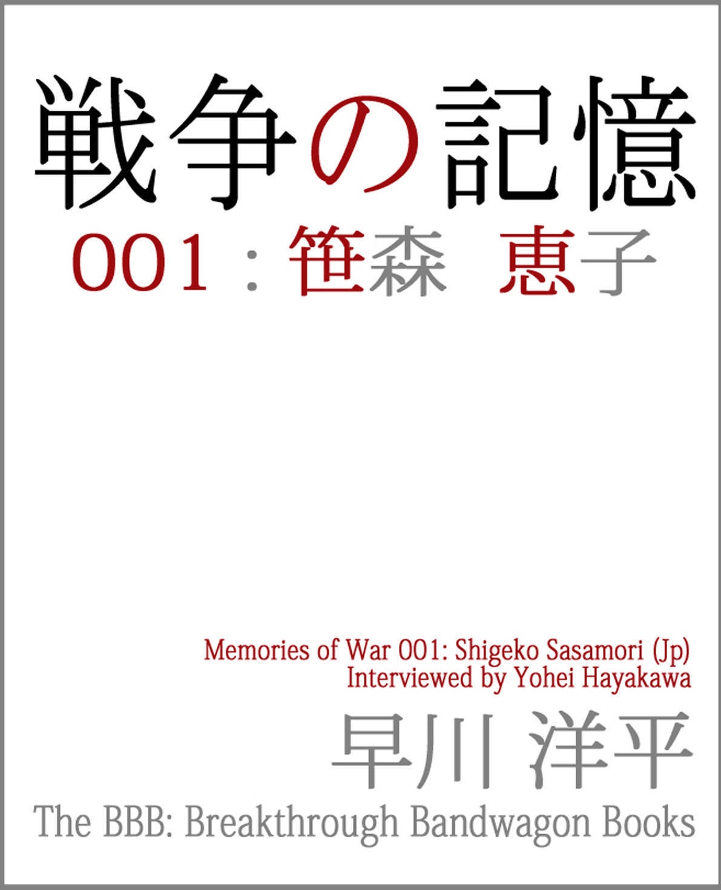
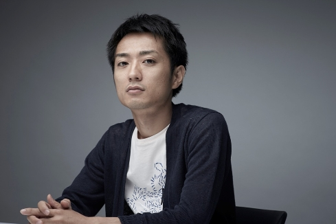
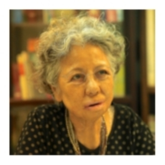
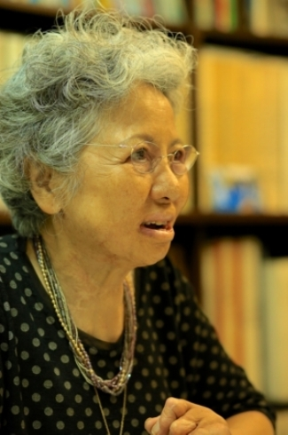
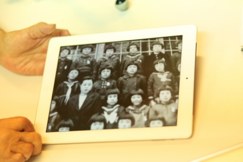
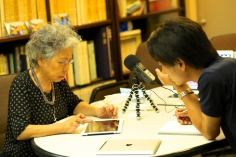

| 戦争の記憶001: 笹森恵子 (The BBB: Breakthrough Bandwagon Books) | |
| 早川洋平 | |
| The BBB: Breakthrough Bandwagon Books (2015) | |

（邦題 : 『戦争の記憶 001: 笹森恵子』）
Originally told in Japanese by Shigeko Sasamori
Interviewed by Yohei Hayakawa
Summarized by Akiko Ogawa
Translated by Hitomi Kuroda
Photographed by Toyohiko Kawai
Cover design by Tanya
Copyright © 2015 Kiqtas / The BBB : Breakthrough Bandwagon Books
All rights reserved.
ISBN: 978-1-329-35701-3
（このプロジェクトについて）
──「戦争の記憶」は、戦争体験者の 肉声を残すプロジェクトです。特定の団体を支持・支援したり、思想を 煽動したりするものではありません──
また、インタビュー聴取に際しては、以下ご了承のうえお聴き下さい。
・インタビューの内容は、体験者の方個人の考え方や意見をそのままにしてあります。また、現在では適切ではないとされる表現が含まれている場合がありますが、修正せずにそのままにしてあります。
・インタビューは、体験者の方が取材 時点での知識と記憶に基づいて語っていることを収録したものです。 そのため、記憶違いやあいまいな点が含まれている場合があります。

毎年 「終戦の日」前に集中する報道を見て、『火垂るの墓』を見て、「 戦争は惨い、二度と起こしてはいけない」と心に決めつつも 8 月 16 日からはまた忙しい日常。
そんな繰り返しだったけれど、終戦 68 年の 2013 年。 節目の年ではないのに、『風立ちぬ』『終戦のエンペラー』『永遠の 0 』と 戦争をテーマにした映画の公開がなぜか多いと感じるのは僕だけでしょうか。
インタビュアーとして、世界で初めて原爆が投下された広島に住む者として、 このテーマと向き合わなければならない。ずっと心のどこかで思っていました。けれど、重い腰があがらない......。
そんな中で複数の方から今夏、こう言われました。
「インタビュアーなら、戦争体験者のインタビューをしてほしい。 ポッドキャストなら肉声を 50 年後も 100 年後も残すことができるのでは？」
終戦から 70 年近く経ち、戦争体験を語れる方は年々少なくなってきています。だからこそ、彼ら彼女らの思いを「肉声のまま」伝えなければならない。一刻も早く。
「戦争の記憶」はラジオ番組ではありませんし、特定の思想へ煽動 するものでもありません。ただ、戦争の時代を生きた方々の肉声を、ポッドキャストというしくみを借りて、 大切 に残していきたい。今を生きるすべての世代の人へ。国内外の人へ。 これから地球に生まれ続けてくるまだ見ぬ僕らの子孫へ。
平和とは何かを考える、そんなきっかけとなれば幸いです。
2013 年 10 月 1 日 早川洋平 （プロインタビュアー／メディアジャーナリスト）
（笹森恵子さんについて）
被爆した 10 年後、手術のため渡米。
平和のため使命を持って、広島の体験を語る。

ささもり・しげこ／ 1932 年 6 月 16 日広島生まれ。
アメリカ・カ リフォルニア州在住
1945 年 8 月 6 日、 13 歳で被爆した笹森恵子さん。真っ青な空に銀色の飛行機がキラキラと輝き、白いものが落ちてきた...。その瞬間のことは鮮明に覚えているという。大火傷を負った恵子さんだが、両親の献身的な看護でなんとか回復することができた。
10 年経って、ケロイドの手術のためにアメリカに渡ることとなり、その後、アメリカ人ジャーナリストのノーマン・カズンズさんの養女に。「それもこれも神様の思し召し」という恵子さんの体験と平和への想いを聞いた。
（ 銀色の飛行機から白いものが落ちるのを見た ）
──恵子さんは広島ご出身ですね。 1945 年 8 月 6 日はどこで何をされていましたか？
当時私は女学校一年生で 13 歳でした。その頃すでに東京や大阪には傷痍爆弾が落ちていて、大火事でたくさんの方が亡くなっていました。私がいた広島にもＢ 29 はしょっちゅう来ていました。でも、爆弾はまだ落とされたことはなかったので、Ｂ 29 が見えても慣れてしまっていましたね。 当時、「建物疎開」といって、爆弾が落ちたときに逃げやすいように建物を壊して間引いていたんですね。若い男たちは兵隊にとられていますから、建物を壊すのは年寄りや女性です。瓦礫の片付けをするのは、中学 1 ､ 2 年生でした。
その日は、私たちの学校がはじめての作業に当たっていました。朝 8 時に集合し、これから作業にあたろうというときに、飛行機の音がして私は空を見上げました。雲ひとつない真っ青なきれいな空でした。銀色にキラキラ光る飛行機が、白い飛行機雲を出しながら飛んでいます。私は近くにいたクラスメイトに「見てごらん、きれいよ」と言って空を指さしました。その瞬間、白いものが落ちるのが見えました。あとから聞いたら、爆弾がついた落下傘だったのです。ものすごい爆風が起こりました。そして私は倒されました。
私がいた場所は、爆弾が落ちた中心地から 1.5 ㎞以内にありました。今で言うと平塚町です。

──その瞬間は、爆弾が落ちたということもわからず、怖いとか痛いといった感覚もなかったのでしょうか。
ええ。だから、中心地にいた人たちは一瞬のうちに丸焦げで、熱いも痛いもなかったんじゃないかと思います。
私の姉は「太陽が地球に落ちたのかと思った」と言っていました。姉たち上級生は軍の仕事をするため、海田にある工場にいました。大きな音がして、何事かと思って建物から出て見たら、大きな火の玉が沈んでいくのが見えたと。
──僕たちはいわゆる「きのこ雲」をイメージしますが......
雲が見えるのは最後なんじゃないかしら。火の玉が見える前に私は飛ばされたわけですが、火の玉のあとに雲ができるんだと思います。雲の前に赤い火柱を見たという人もいます。
私は長い時間気を失っていました。意識が戻ってから周りを見たら、真っ黒でした。暗いのではなくて、黒いのです。大火傷を負っていたのに、何も感じませんでしたね。真っ黒の中にしばらく座っていたら、霧が出てきたように少しずつ明るく、グレーになってきました。ああ、きっと近くに傷痍爆弾が落ちたんだ、と思いました。
「爆弾が落ちたときは、大人について行け」と言われていましたから、とにかく近くを歩いている大人について行こうと思いました。着ているものがボロボロだったり、足を怪我していたり、火傷で皮膚がめくれ、ピンク色になっている人たちが歩いていました。川のほうへ向かっていたんです。
川べりまで来ると、たくさんの人が集まっていました。川の中にも人が大勢入っていたので、水が見えないくらいでした。
「ぎゃーん」
ふと、赤ちゃんの泣き声が聞こえました。周囲のざわめきも聞こえてきました。 それまでは無感覚で何も聞こえなかったんです。音が聞こえるようになっても、自分の火傷には気づきませんでした。体の 4 分の 1 が焼けていたんですけどね。
橋を渡って、避難所になっている小学校へ行きました。大きな木の下に座ったら、そのまま倒れてしまったようです。いつの間にか講堂に運ばれ、私はそこに 5 日間いました。
目が開かなくて、昼も夜もわからないのですが、とにかく「千田町一丁目の新本恵子です。お水ください。両親に伝えてください」と叫びました。だんだん声を出すのもしんどくなってきます。あともう 1 回だけ、もう 1 回だけ叫ぼう。そうしたら誰かが聞いてくれるに違いない。そう思いながら声を出していたことを覚えています。
結局お水はもらえませんでした。それで良かったんです。大火傷を負っている人にお水をあげてはいけないそうですね。お水を飲んで、「ああ、美味しい」と言って死んだ人がたくさんいるそうです。
母は焼け跡に毎日通い、私の名前を呼んで探していたそうです。火傷をした人の収容所があると聞けば、そこまで歩いていって探しました。似島へも船で行きました。でも、見つからなくてまた帰ってくるんです。
（「炭団」のような私を、母が見つけてくれた）

私たちは家が二つあって、「夏の家」と呼んでいたほうの家は川沿いの魚市場の近くにありました。そちらの家は、たまたま魚市場の陰になって爆風でも倒れませんでした。当時母はここにいたんです。家の中で飛ばされ、起き上がってから外を見てみたら、周りの家がぺたんこにつぶれていたそうです。
そこから、普段私たちが暮らしていたほうの家の、二階ベランダ部分が見えました。それで、母はぺたんこになった家々の屋根を歩いて行ってみました。でも、やはり潰れていてどうすることもできません。隣の家の人の声が聞こえますが、どこにいるのかわかりません。瓦礫をどかしてもどかしても、人らしき姿は見えません。そうこうしているうちに、あちこちから火の手があがり、母のいる場所にも火が近づいてきました。
「ごめんねぇ。どこにいるかわからないの」
お隣さんを助けることができないまま、母はその場を去らざるをえませんでした。
父はその時ちょうど外にいました。前の日に釣りに行ったので、ご近所のおじいさんたちのところに魚を持って行っていたのです。そして、私と同じように飛行機から白いものが落ちるのを見たそうです。
「爆弾落ちたから、逃げえ！」
おじいさんたちにそう叫んで走り、魚市場にある大きなセメントの冷蔵庫へすべりこみました。爆音が消えてから外の様子を見てみたら、さっきまで一緒にいたおじいさんたちは、座った格好のまま皮膚が真っ赤に焼けただれていたそうです。
一瞬遅かったら父もそうだったのでしょう。
両親と家が無事だったおかげで、私は良くなることができました。家で、両親が治療してくれたんですから。薬もないし、病院はいっぱいだし、私は食用油で治療してもらったんです。
──想像もつかないような体験をされたんですね 。
想像できないでしょう？元気になってから、自分がどのような状態だったのか母に質問したんですが、いつも「今度ね」と言われていました。年をとってから、ようやく教えてくれたんです。だからいまこうしてお話ができるわけ。
避難所の講堂は真っ暗で、母はロウソクを 1 本持って「しげこ～しげこ～」と名前を呼びながら探したそうです。そうしたら、蚊の鳴くような声で「ここよ～」と言ったと。ハっと声の主を 見ても、それが本当に娘なのかどうかわかりません。「炭団（たどん : 炭を丸めた燃料。黒く丸く、ざらざらしている）のようだった」と言っていました。私の顔は黒く腫れ上がっていて、目も鼻もわからなかったんですね。もちろん、髪も焼けてしまっていました。でも、おかっぱにしていた髪の毛のおかげで、額の上半分と頭の部分、耳のあたりの皮膚は焼けていませんでした。 父は、黒く焼けてしまった皮膚をはいでくれました。母は、とにかく私の目・鼻・口を開けようと、食用油と布を使って、私の顔を拭いてくれました。膿がどんどん出てくるので、洗い流す必要があるんです。本当につきっきりで看病してくれました。
──目が開けられるようになったり、食事できるようになるのにどのくらいかかったのでしょうか。
はっきりとは覚えていません。新円切替（ 1946 年 2 月 16 日に幣原内閣が発表した戦後インフレ対策）の前だったと思います。
私が寝ていると、近所の学友のお母さんが来て、私の母と話しているのが聞こえたことがあります。
「恵子ちゃんは本当に良かったねぇ。私の娘は半分瓦礫の下敷きになってしまって、一所懸命引っ張り出そうとしてもダメだったの。だんだん火がまわってくるでしょう？『お母さん、早く逃げて。お母さんがいなかったら、下の子たちはどうなるの』って言うの」
生きたまま別れなくてはならなかったなんて、どんなに辛い気持ちだったでしょうね。
他にも、地獄のような広島の町の様子を聞きました。 町には死体がゴロゴロと転がっていて、兵隊さんたちがそれをゴミでも拾うかのように拾って焼き場へ持って行くんだそうです。真っ黒になるほど蝿がたかって、ウジもわいていて。
──そういったお話を聞いたときの恵子さんの心境はどのようなものでしたか。
戦争ですから、人が死ぬということ自体はわかっていたわけです。それで、最初は「広島にもそんなにたくさんの爆弾が落とされたのか」と思っていました。次第に、みんなが「ピカドン」と言っているのを聞くようになりました。たくさんの爆弾ではなくて、一つの大きな爆弾だったんですね。「そんなに大きな爆弾があったのか」と驚きました。また落とされるかもしれない、と怖い気持ちがありました。
私は終戦のときのラジオ放送は聞きませんでしたが、家族や近所の人がうちに集まって話しているのを聞きました。日本は負けた、と。でも、終戦になる前からそういうムードはあったと思います。だって食べるものもないし、家にあるものは指輪でも鍋でも軍に差し出さなければならなかったくらいですから。
「こんなものまで出させて...。この戦争は負けるでぇ」
そうやって大人たちが陰で言っているのを聞きました。
──今考えると軍部はおかしかったなど、いろいろな考えがあると思うのですが、当時はどうだったのでしょうか。
当時、天皇は神様でしたよ。神様だから直接見てはいけないと言われていたのです。 とにかく私は戦争が終わったことが嬉しかったです。戦後、広島には外国から食べ物や着るものが送られ、建物も建つようになり、人様のおかげで復興していきました。その頃になるとまた、「戦争がなければ、みんな友達になれたのに。どんなにか幸せだったのに」と強く感じるようになりました。年を経るにつれ、戦争の悪を自覚します。だからこうして、聞いてくださる方がいるところへは行って戦争の話をしています。
いま、憲法を変えるという話もありますよね。私は「なんで？」って、すごく驚きました。戦争が起こる可能性のある方向へは進んでほしくないです。
（ 原発と日本人の品格 ）
──こうしてお話を伺っていると、リアルな「戦争」のことを知らないのは本当に怖いと感じます。恵子さんの凄まじい体験をお聞きして、ようやく少し知ることができていますが、知らない人も多いと思います。
生まれる前にあったことは、どうしてもぴんと来ないんですよ。私も、明治維新や関東大震災のことを映画で見たりして「ああ、そういうことがあったんだ」とは思いますけど、ぴんと来ないですもの。
先日、若い人たちと話をしていて、原子力発電所のことが話題に出ました。原発は廃止したほうがいいか、続けたほうがいいか、みんな手を挙げたんですね。一人の青年は、どっちがいいのかわからないと言いました。私は、「あなたの気持ちはよくわかる。私の体験談を聞いても、『そういうことがあったのか』とは思うけど、ぴんと来ないわよね。生まれる前の話だもの。でも、これからの未来のために考えるのよ。積極的に、現状はどうなのか研究して、それで意見を決めてごらん」と伝えました。
私は原発に反対です。理由は、いまだに放射能が出ているから。放射能を浴びてガンになって死んでいった人は多いんです。私の父も母も、放射能で亡くなりまし た。すぐに火傷で死ななくても、遅かれ早かれ不調が出るんですよ。原子力じゃなくたって、電気は作れるはずです 。 これだけ技術は発達しているのだし、もっと日本の科学者が新しいエネルギーの研究に力を入れれば、原子炉なんて要らないと思います。
一人の技術者の方が、こう言いました。「原発は廃止できるに越したことはないと思うけど、いまは技術が発達して、絶対に壊れないようなものが作れるから、全部なくす必要はない」。
「それなら、福島にある原子炉は修理できないんですか？放射能が漏れているのはどうにかなりませんか」。
私が尋ねると、「私は作るほうの技術者なので、直すことについてはよくわかりません」という ことでした。まずは、止めなければいけないと思うんですけどね。
いま、世界から見て日本は人気がすごく落ちています。そういうデータを見たことがありますし、私の実感としてもそうです。 「絶対に戦争をしない。核兵器を持たない。原発はすべて止める。」 そう宣言して立ち上がったら、元の日本のように尊敬されると思います。原発は、今日明日止めるのは無理でしょう。でも、少しずつなくしていくのです。
──恵子さんから見て、日本人はどう変化していますか。
品位が下がっているように思えます。昔は、アメリカで日本人留学生は喜んで下宿先に受け入れられました。礼儀正しく、部屋をきれいに使いますし、やさしいからです。ところが、今は「日本人？ダメダメ」と言われます。うるさいし、だらしないんですって。もちろん、いい学生さんはたくさんいますよ。でも、一般的にそう思われているのです。
（ 手術のためにアメリカへ。そして看護士に ）
──恵子さんは、顔のケロイドの手術のためにアメリカに渡られたそうですが、それは何歳の頃ですか。
被爆の 10 年後で、 23 歳の頃です。 1 年ちょっといました。
──アメリカで寄付が集まり、 25 名の方が一緒に行ったそうですね（アメリカ人ジャーナリストのノーマン・カズンズさんが、ケロイドを負った若い被爆女性のための寄付金プロジェクトを発足。ノーマン・カズンズさんはのちに恵子さんの養父となる）。 原爆を落とした国に行くことについては、複雑な気持ちではありませんでしたか。

当時私は、流川教会の谷本清先生を囲んで行なわれていた「聖書の会」に行っていました。谷本先生が、日本に来ていたノーマン・カズンズに「この子たちの手術はなんとかならないだろうか」と言ってくださったんじゃないでしょうか。
アメリカに戻ってから 2 年かけてお金を集めたそうです。あるとき牧師さんに言われて、私もみんなと一緒に市民病院に行ったんです。そこに、ノーマン・カズンズとお医者さん、看護士さんが来ていて、問診を受けました。手術をして機能が回復する、アメリカに渡る元気がある等の条件を満たした人が、対象に選ばれたようです。
問診の際に「アメリカに行きたいか」と聞かれたのですが、私はきっと行かないだろうと思っていました。すでに東京大学の附属病院で何度も手術をしていましたから。アメリカに行くと言われてもぴんと来なかったです。全然期待していませんでした。でも、選んでもらってアメリカに行った。これも神の摂理だと思います。
「なぜ私が大火傷を負ったのか」と考えたとき、「神の証」なのではないかと思いました。 神は人間が幸せになることを望んでいます。戦争なんてしちゃいけないの。でも、それを伝える術がないでしょう？だから、私たちはそれを伝える使命を負ったのです。私の火傷の痕、傷を見れば、単に言葉で伝えるよりも、感じるものがありますよね。ああ、そのために私はこんな火傷を負ったんだ、と思いました。
アメリカに渡ったこともそうです。私の人生はすべて、神の摂理なのです。
──そのように思えるようになったきっかけはあるのでしょうか。
もともと、私の家は仏教を信仰していました。おばあちゃん子だったので、おばあちゃんについてお寺によく行っていました。
被爆後、歩けるようになって友達の家に行く道すがら、きれいな音楽が流れてきたので近寄ってみたんです。それがキリスト教の教会でした。讃美歌を歌っていたんですね。「どうぞお入りください」と言われて中に入り、後ろのほうに座って牧師さんのお話を聞きました。意味はよくわからなくても、とにかく居心地が良かったです。それから毎週日曜日に教会に通うようになりました。 谷本先生が「あなたのような状態の人を他にも知りませんか」とおっしゃったので、私と同じように火傷を負っている女学生たちを集めました。そして、週に 1 回、「聖書の会」を開くようになったのです。
私は子供の頃から看護士になりたいと思っていました。東大病院で手術を受けるたびに、その思いを強くしていました。アメリカで手術をし、帰国する直前に将来のことを聞かれたとき、日本に帰ったら看護士になるつもりだと答えました。そうしたら、「ここでやってみないか」と言われたんです。すぐには決められなくて、両親に相談しました。父は、「お前といつまでも一緒にいられるわけじゃない。だから、自分で決めなさい」と言いました。
アメリカでは本当に良くしてもらったので、またみんなに会えるという喜びで、それほど深く考えずに、また渡米することになったんです。
飛行機の手配等はみんなノーマン・カズンズがやってくれました。私はノーマン家の養女になったから、アメリカで学ぶことができたんです。
──最後に、これをお聴きの方にメッセージをいただけますか。
愛の心、思いやりの心を育てることが大切だと思います。そうすれば、自然に戦争反対の気持ちも生ま れるでしょう。この世で一番大事にしなければならないのは命です。 こうしてインタビューしていただき、記録に残してもらえるのはとてもありがたいです。これも偶然ではありません。神がちゃんと出会えるようにしてくれているんです。私は話すことはできますが、インターネットラジオはできません。早川さんはできる。お互いにできることを出し合って、将来のために残そうとしているわけです。これは愛ですね。
みなさん、お元気で。命を大切に、頑張って生きていきましょうね。 （了）
***
・このインタビューをポッドキャストで聴く
https://itunes.apple.com/jp/podcast/zhan-zhengno-ji-yi-memories/id718023220?mt=2
・このインタビュー を PC で聴く
http://podcast5.kiqtas.jp/memories/archives/2013/09/1memories1-shigeko-sasamori.html
・「戦争の記憶」のウェブサイト